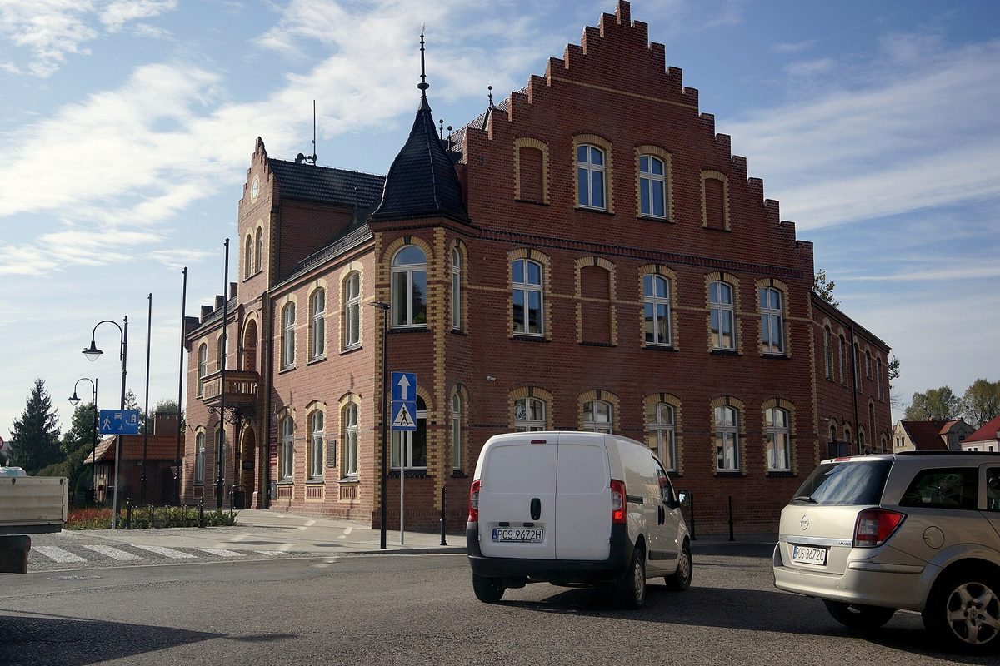

폴란드 오도라누프 등 3개 지자체 에너지 클러스터, 공적 자금 3,000만 즈워티로 주민 태양광 627곳…주민 부담은 설치비 10%

2027년 6월까지 저장장치도 함께 설치, 시장 "클러스터 전체로는 1,500곳 가까이"…세 지자체는 주민에게 재생에너지 설비를 보여 줄 '에너지 아카데미'도 추진
폴란드 서부 비엘코폴스카주의 오도라누프(Odolanów)시·군이 국가회복계획(KPO) 지원금 3,000만 즈워티로 주민 태양광 설비 627곳을 설치하며, 주민은 설치비의 10%만 부담한다. 오도라누프는 이웃 술미에지체(Sulmierzyce)·프시고지체(Przygodzice)와 함께 꾸린 '에너지 클러스터'의 대표 지자체로, 2027년 6월까지 태양광 패널과 함께 에너지 저장장치도 들어서며, 마르친 쇼르스키(Marcin Szorski) 오도라누프 시장은 세 지자체 클러스터 전체로는 설비가 1,500곳 가까이 된다고 밝혔다. 쇼르스키 시장은 클러스터 덕분에 이만한 규모의 지원 사업을 신청할 수 있는 공동체를 만들 수 있었다며, 클러스터의 다음 목표로 더 싼 전기, 환경 효과, 에너지 빈곤층 지원을 꼽았다. 오도라누프 의회는 에너지가 얼마나, 어디서 필요하고 남는 전기를 어떻게 할지 담은 지역 에너지 전환 계획을 결의로 채택했고, 시는 남는 전기를 수소로 저장하는 실험과 지역에서 만든 전기를 시 수영장·하수처리장 등에 쓰는 방안을 계획했지만, 시장은 지금의 EU 사업 규정이 수소 기술의 실제 활용을 막고 있다고 말했다. 세 지자체는 머리글자를 딴 '에너지 아카데미 OPS'를 세워 주민에게 소형 재생에너지 설비와 풍력·수소·바이오가스 시설이 어떻게 돌아가는지 직접 보여 줄 계획이며, 시장은 "사람들은 모르는 것을 두려워한다"며 소셜미디어 등에 도는 잘못된 정보에 맞서고 바이오가스 시설 같은 투자에 주민 동의를 얻는 데 아카데미가 도움이 될 것이라고 했다.
시민에너지 관점
작은 지자체 세 곳이 묶여 주민 태양광 1,500곳 가까이를 한꺼번에 추진하고 공적 자금으로 설치비의 90%를 댄다는 것은, 혼자서는 힘에 부치는 지자체도 연대하면 주민 한 사람 한 사람을 전기를 만드는 주체로 바꿀 수 있다는 것을 보여 준다. 보조금이 끝나면 사업도 끝나는 것 아니냐는 걱정이 있을 수 있지만, 오도라누프는 의회 결의로 지역 에너지 전환 계획을 세우고 저장장치와 주민 교육까지 묶어 한 번의 보급을 넘어서려 하고 있다. 덴마크가 2009년부터 2020년까지 새 풍력 사업 지분의 20%를 지역 주민에게 먼저 내놓게 했던 것처럼, 낯선 설비가 지역의 지지를 얻으려면 주민이 구경꾼이 아니라 참여자가 되어야 한다. 국내에서도 지자체가 주민과 함께 공공 재원을 신청하고, 주민이 적은 부담으로 햇빛 전기의 생산자가 되는 길을 제도로 넓혀야 한다.
출처: Portal Samorządowy 2026-11-05 Wojciech Kuta 원문 보기
ポーランド・オドラヌフなど3自治体のエネルギークラスター、公的資金3,000万ズウォティで住民の太陽光627カ所…住民負担は設置費の10%
2027年6月までに蓄電設備も併設、市長「クラスター全体では1,500カ所近く」…3自治体は住民に再エネ設備を見せる「エネルギーアカデミー」も計画
ポーランド西部ヴィエルコポルスカ県のオドラヌフ（Odolanów）市・郡が、国家復興計画（KPO）の支援金3,000万ズウォティで住民の太陽光設備627カ所を設置し、住民は設置費の10%だけを負担する。オドラヌフは隣接するスルミェジツェ（Sulmierzyce）、プシゴジツェ（Przygodzice）と組んだ「エネルギークラスター」の代表自治体で、2027年6月までに太陽光パネルとあわせて蓄電設備も設置される。マルチン・ショルスキ（Marcin Szorski）オドラヌフ市長は、3自治体のクラスター全体では設備が1,500カ所近くになると明らかにした。ショルスキ市長は、クラスターのおかげでこれほどの規模の支援事業を申請できる共同体をつくれたと述べ、クラスターの次の目標として、より安い電気、環境効果、エネルギー貧困層の支援を挙げた。オドラヌフ議会は、エネルギーがどれだけ、どこで必要か、余った電気をどうするかを盛り込んだ地域エネルギー転換計画を決議で採択し、市は余剰電力を水素で貯蔵する実験や、地元でつくった電気を市営プール・下水処理場などで使う案を計画しているが、市長は現在のEUの事業規定が水素技術の実用化を妨げていると語った。3自治体は頭文字を取った「エネルギーアカデミーOPS」を設け、住民に小型の再エネ設備や風力・水素・バイオガス施設がどう動くのかを直接見せる計画で、市長は「人は知らないものを恐れる」と述べ、SNSなどで広がる誤った情報に対抗し、バイオガス施設のような投資に住民の同意を得るうえでアカデミーが役立つとした。
市民エネルギーの視点
小さな自治体3つが手を組み、住民の太陽光1,500カ所近くを一度に進め、公的資金で設置費の90%を賄うということは、単独では手に余る自治体も連携すれば住民一人ひとりを電気をつくる主体に変えられることを示している。補助金が終われば事業も終わるのではないかという懸念もあり得るが、オドラヌフは議会決議で地域エネルギー転換計画を立て、蓄電設備と住民教育まで組み合わせて一度きりの普及を超えようとしている。デンマークが2009年から2020年まで新たな風力事業の持ち分の20%を地域住民に優先して提供させたように、なじみのない設備が地域の支持を得るには、住民が見物人ではなく参加者にならなければならない。韓国でも自治体が住民とともに公的財源を申請し、住民が少ない負担で太陽光の電気の生産者になれる道を制度として広げるべきだ。
出典: Portal Samorządowy 2026-11-05 Wojciech Kuta 原文を読む
波兰奥多拉努夫等3个地方政府组建能源集群，以3,000万兹罗提公共资金为居民安装627处光伏…居民只需承担10%安装费
2027年6月前同步安装储能设备，市长称"整个集群将近1,500处"…三地还计划设立向居民展示可再生能源设施的"能源学院"
波兰西部大波兰省的奥多拉努夫（Odolanów）市镇将利用国家复苏计划（KPO）的3,000万兹罗提资助，为居民安装627处光伏设施，居民只需承担安装费的10%。奥多拉努夫是与邻近的苏尔米耶日采（Sulmierzyce）、普日戈济采（Przygodzice）共同组建的"能源集群"的牵头地方政府，2027年6月前除光伏板外还将安装储能设备；奥多拉努夫市长马尔钦·肖尔斯基（Marcin Szorski）表示，三地集群合计的设施将接近1,500处。肖尔斯基说，正是有了集群，才能形成足以申请如此规模资助项目的共同体，并把更便宜的电力、环境效益和帮扶能源贫困人群列为集群的下一步目标。奥多拉努夫议会已以决议形式通过地方能源转型规划，写明需要多少能源、在哪里使用以及富余电力如何处理；市里还计划试验用氢储存富余电力，并把本地发的电用于市游泳馆、污水处理厂等，但市长表示，目前欧盟项目规定妨碍了氢技术的实际应用。三地计划以首字母命名设立"OPS能源学院"，向居民直观展示小型可再生能源设施以及风电、氢能、沼气设施如何运转；市长说"人们害怕自己不了解的东西"，认为学院有助于回应社交媒体等渠道流传的错误信息，并在沼气设施等投资上争取居民同意。
市民能源视角
三个小地方政府联手，一次推进近1,500处居民光伏，并用公共资金承担90%的安装费，这说明单靠自己力不从心的地方政府，联合起来也能让每一位居民成为发电的主体。有人或许担心补贴结束项目也就结束，但奥多拉努夫以议会决议制定地方能源转型规划，把储能和居民教育一并纳入，力图超越一次性的推广。正如丹麦在2009年至2020年间要求新建风电项目把20%的股份优先提供给当地居民，陌生的设施要赢得当地支持，居民就必须是参与者而不是旁观者。韩国也应在制度上拓宽道路，让地方政府与居民共同申请公共资金，让居民以较小负担成为太阳能电力的生产者。
来源: Portal Samorządowy 2026-11-05 Wojciech Kuta 查看原文
Energy cluster of three Polish municipalities led by Odolanów installs 627 residential solar systems with 30 million zloty in public funds, residents pay 10% of costs
Energy storage to be added by June 2027 and the mayor says the cluster as a whole will have nearly 1,500 systems; the three municipalities also plan an "Energy Academy" to show residents how renewable installations work
The town and municipality of Odolanów in Poland's western Greater Poland region is installing 627 solar systems for residents with 30 million zloty from the National Recovery Plan (KPO), and residents pay only 10% of the installation cost. Odolanów leads an "energy cluster" formed with neighbouring Sulmierzyce and Przygodzice, and by June 2027 energy storage will be installed alongside the solar panels; Odolanów mayor Marcin Szorski said the cluster of the three municipalities will have nearly 1,500 systems in total. Szorski said the cluster made it possible to build a community able to apply for funding on this scale, and named cheaper electricity, environmental benefits and support for people at risk of energy poverty as the cluster's next goals. The Odolanów council has adopted by resolution a local energy transition plan setting out how much energy is needed, where, and what to do with surpluses, and the municipality has planned trials storing surplus power as hydrogen and using locally generated electricity at the municipal swimming pool and sewage treatment plant, though the mayor said current EU programme rules prevent hydrogen technology from being used in practice. The three municipalities plan to set up the "OPS Energy Academy", named after their initials, to show residents first-hand how small renewable installations and wind, hydrogen and biogas facilities work; saying "people fear what they do not know," the mayor added that the academy would help counter misinformation spreading on social media and win residents' consent for investments such as biogas plants.
Citizen Energy View
Three small municipalities joining forces to roll out nearly 1,500 residential solar systems at once, with public money covering 90% of the installation cost, shows that local governments that would struggle alone can, together, turn individual residents into producers of electricity. Some may worry that the project will end when the subsidy runs out, but Odolanów has adopted a local energy transition plan by council resolution and is tying in storage and resident education to move beyond a one-off rollout. Just as Denmark required new wind projects from 2009 to 2020 to offer 20% of their shares to local residents first, unfamiliar installations win local support only when residents become participants rather than onlookers. Korea, too, should widen the institutional path for local governments to apply for public funds together with residents, so that residents can become producers of solar power at a small cost to themselves.
Source: Portal Samorządowy 2026-11-05 Wojciech Kuta Read the original